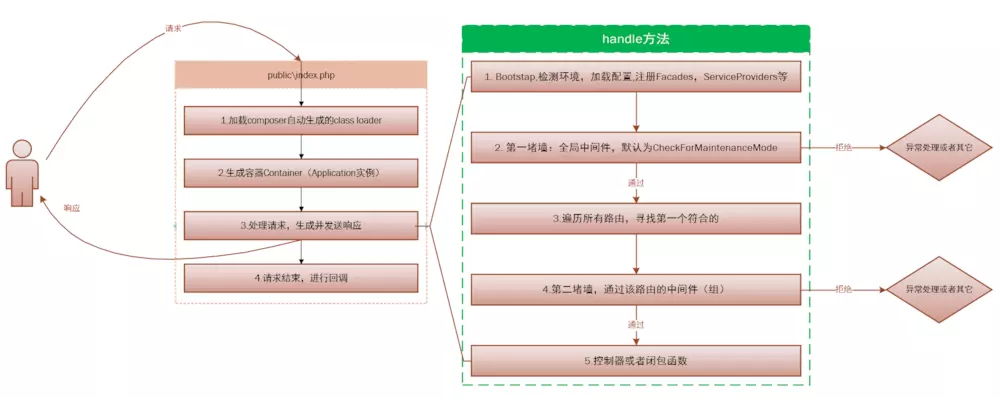

0x00 前言
闲来无事看看 Laravel 源码，初步了解一下其生命周期方便理解和使用它。
0x01 从入口文件开始
因为 Laravel 是单一入口的框架，所以我们第一步从 public/index.php 这个文件读起。
以下代码均基于 Laravel 5.7，原注释被本人替换。
1 |
|
上面的代码简明清晰的表达了 Laravel 的处理流程，但是我们还是想要了解其中细节，比如 $app、$kernel到底是什么？$kernel->handle 发生了什么？所以我们接着看吧！
0x02 Application 实例，从 bootstrap/app.php 开始
上面的 index.php 代码里通过 require 引入了 bootstrap/app.php 文件获得了 Application 实例，下面我们看看这个文件内容。
1 |
|
如果你熟悉容器这个概念那么阅读上面的代码应该是没有障碍的，因为 Application 类继承了 Container，所以 $app 也是一个容器而已，然后 $app->singleton(...) 只是绑定了一些接口对应的类。因为将 Illuminate\Contracts\Http\Kerne 接口绑定到了 App\Http\Kernel，所以在 index.php 的这行代码：
1 | $kernel = $app->make(Illuminate\Contracts\Http\Kernel::class); |
$kernel 就是 App\Http\Kernel 的实例。
现在我们看看 Illuminate\Foundation\Application 是什么，由于该类有 1000 多行所以代码就只贴声明和构造函数了喔～
1 | use Illuminate\Container\Container; |
首先看声明 Application 继承了 Container 类，说明它也是一个容器。然后它还实现了 ApplicationContract 这个自定义的接口和 HttpKernelInterface 这个 Symfony 提供的接口。而在构造函数中它向自己这个容器注册了一些基本的绑定（binding）、服务提供者（service provider）和别名（alias）。
0x04 App\Http\Kernel 是如何 handle 请求的？
上面我们知道 $kernel 其实就是 App\Http\Kernel 的实例，下面我们来看看这个类，打开 app/Http/Kernel.php 代码如下：
1 |
|
看完如上代码发现其实真正的重点在父类 Illuminate\Foundation\Http\Kernel，因为 App\Http\Kernel 类只是覆盖了父类的中间件相关的属性而已。那我们来看看 Illuminate\Foundation\Http\Kernel 类：
1 | class Kernel implements KernelContract |
看完上面的代码也许你最为疑惑的可能是 Pipeline 的作用，但由于篇幅限制本文不会介绍其作用。但是在这里推荐一篇很好的文章 Laravel Pipeline 组件的实现原理，想要了解可以看看。
0x05 生命周期图

原谅我的懒惰，直接从网上找了一张。图片来源：Laravel 的生命周期